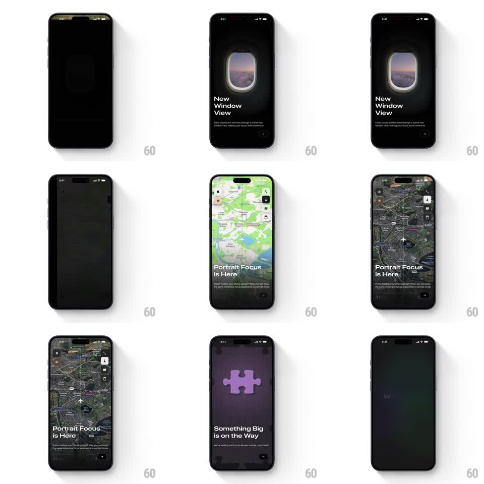

Media
Frame-by-frame

Rebuild this animation 1:1: FocusFlight's onboarding carousel - full-screen pages with staggered text reveals over living backgrounds: an airplane-window video for "New Window View", a map that flips between standard and satellite for "Portrait Focus is Here", and a purple puzzle-piece illustration for "Something Big is on the Way".

Rebuild this animation 1:1: FocusFlight's onboarding carousel - full-screen pages with staggered text reveals over living backgrounds: an airplane-window video for "New Window View", a map that flips between standard and satellite for "Portrait Focus is Here", and a purple puzzle-piece illustration for "Something Big is on the Way". ## Integration Integration: stack-agnostic spec - springs given as stiffness/damping, timed motions as duration + curve; map every value to your framework and animation library of choice. ## Scene Dark onboarding pages with page dots and a next affordance bottom-right. Page 1: a rounded airplane-window video (sunset clouds) centered on black, "New Window View" headline + subcopy. Page 2: a full-bleed map that transitions from standard to satellite style with a flight-path overlay, "Portrait Focus is Here" + subcopy. Page 3: dark purple page with a soft-glow puzzle piece, "Something Big is on the Way" + waitlist subcopy. ## Motion spec Pattern: video-background paged carousel with staggered text. - Page turn: horizontal slide (400ms, ease-in-out); the incoming page's background scales 1.05 -> 1 as it lands. - Text: headline words slide up and fade (70ms stagger, 300ms each), subcopy follows 120ms later, controls last. - Window video: the clip loops with a slow cloud drift; the window frame gets a subtle light shift (2s cycle). - Map: style cross-fades standard -> satellite (600ms) once the page settles; a small plane glyph crawls along the route line (3s loop). - Puzzle page: the piece floats (10px, 2.5s) with a slow hue shimmer. ## Calibration - Backgrounds are alive but quiet - if the background competes with the headline, slow it down. - Text stagger restarts on every page entry. ## Reduced motion Static poster frames for each background; text fades in without stagger (200ms). ## Don't miss - Each page owns its background medium: video, map, illustration - don't reuse one across pages. - The window is a rounded rectangle with a real frame, not a full-bleed video.